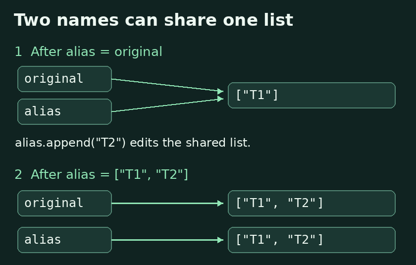
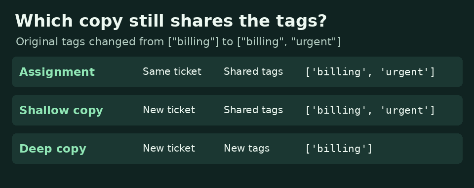

Core data structures & memory
A support team needs to keep tickets in arrival order, look up ticket fields and count repeat customers. Start by choosing a structure for each job. Then follow one ticket as you assign it to another name or make a copy.
Lists, tuples and slicing
Understand references and copies · Runnable tricky questions · Build the intake summary
A data structure holds several values so you can work with them together. Choose one based on what you need to do with the values.
| Structure | Write it | Use it for |
|---|---|---|
| List | ["T1", "T2"] | An ordered sequence you can change. Duplicates are allowed. |
| Tuple | ("T1", "open") | An ordered sequence whose positions you cannot replace after creation. |
| Dictionary | {"id": "T1"} | Values you look up by a unique key. |
| Set | {"T1", "T2"} | Unique items and membership checks. A set does not promise insertion order. |
In your python-practice folder, save this as support_queue.py. Run uv run python support_queue.py, or use the same plain Python command you used in setup. Predict the first and last ticket.
queue = ["T1", "T2", "T3"]
print(queue[0])
print(queue[-1])
print(queue[1:3])T1
T3
['T2', 'T3']Index 0 selects the first item and -1 selects the last. The slice [1:3] includes indexes 1 and 2 because it stops before index 3. It creates a new outer list.
Use queue.append("T4") to edit the queue. For a pair whose positions should stay fixed, use a tuple such as ("T2", "open"). You can unpack it with ticket_id, status = ("T2", "open"). A tuple’s positions can still refer to mutable objects. For a one-item tuple, keep the comma, as in ("T2",).
Predict what changes with a shorter queue
With only ["T1"], queue[1:3] gives []. Directly reading queue[1] raises IndexError.
Dictionaries and sets
A ticket has named fields. Use ticket["status"] for a required field and ticket.get("owner", "unassigned") for an optional one. Direct lookup of a missing key raises KeyError. A set answers whether you have seen a value before.
ticket = {"id": "T2", "status": "open"}
seen = {"T1", "T2"}
print(ticket.get("owner", "unassigned"))
ticket["status"] = "closed"
print(ticket["status"])
print("T2" in seen)
seen.add("T2")
print(len(seen))Expected output
unassigned
closed
True
2Braces with key: value pairs make a dictionary. Braces with values alone make a set. Use {} for an empty dictionary and set() for an empty set. Adding "T2" twice still keeps one copy. For two sets, a & b gives the items in both and a - b gives the items only in a.
How dictionaries and sets find a match
Dictionary keys and set members must be hashable. Python uses their hash and equality to find a matching entry. A ticket ID like "0042" works as a key. A list is unhashable. A tuple can be hashable if all its items are hashable. The pair ("north", "0042") works as a key, while ("north", ["0042"]) raises TypeError when used as one.
Assigning to an existing key replaces its value. A dictionary keeps keys in insertion order. If you want to produce a first-seen list of unique customers, append to a list and use a set to check whether each customer is new.
Update a ticket register
The keys are ticket IDs and the values are ticket records. Use .items() to unpack each key and value in the loop. Predict whether the owner of T1 will survive the update.
tickets = {
"T1": {"status": "open", "owner": "Mia"},
"T2": {"status": "closed"},
}
# Replacing T1's value replaces its whole record.
tickets.update({"T1": {"status": "waiting"}})
removed = tickets.pop("T2", None)
print(removed)
for ticket_id, record in tickets.items():
print(ticket_id, record["status"], record.get("owner", "unassigned"))Expected output
{'status': 'closed'}
T1 waiting unassigned.pop(key, default) removes the key and returns its value. If the key is missing, it returns the supplied default. To keep the owner while changing just the status, use tickets["T1"]["status"] = "waiting" in place of the update() call.
Why does a list fail as a dictionary key?
A dictionary key must be hashable. Python uses its hash to look it up. A hashable object keeps the same hash during its lifetime and equal keys must have the same hash. A string works as a key. A list is unhashable and using it as a key raises TypeError. A tuple of strings works when you need a key with two parts.
Edit a ticket queue and preview its order
Two entries show ticket T3. Remove its first occurrence, take the next ticket for work and make a sorted preview. Before you run this, guess which steps change the original queue.
queue = ["T3", "T1", "T3", "T2"]
queue.remove("T3") # Remove the first matching value.
print(queue)
next_ticket = queue.pop(0) # Remove the first item and return it.
print(next_ticket)
print(queue)
preview = sorted(queue) # A new list for display.
print(preview)
print(queue)
queue.sort() # Reorder the queue itself.
print(queue)Expected output
['T1', 'T3', 'T2']
T1
['T3', 'T2']
['T2', 'T3']
['T3', 'T2']
['T2', 'T3']| Call | Changes the list? | Returns |
|---|---|---|
queue.remove(value) | Yes, removes the first match | None |
queue.pop(index) | Yes, removes by position | The item removed |
sorted(queue) | No | A new sorted list |
queue.sort() | Yes, reorders it | None |
Predict and check two common mistakes
queue = queue.sort() reorders the original list, then assigns None to queue. Use queue.sort() on its own. queue.remove("T9") raises ValueError if "T9" is absent. pop(0) on an empty list raises IndexError.
Find and insert tickets
Predict how many times T3 appears, where its first occurrence sits and where an urgent ticket will land.
queue = ["T3", "T1", "T3"]
print(queue.count("T3"))
print(queue.index("T3"))
# Put the urgent ticket second, shifting the later items right.
queue.insert(1, "T9")
print(queue)Expected output
2
0
['T3', 'T9', 'T1', 'T3']count() returns zero for a missing value. index() raises ValueError if it can’t find a match. insert() adds the new item before the specified position and changes the list in place.
Clear a ticket that might already be gone
A set of pending IDs only cares which tickets are still pending. If a duplicate completion notice arrives, discard() can run again safely.
pending = {"T3", "T9"}
pending.discard("T3")
pending.discard("T3") # A repeated notification can arrive.
print(sorted(pending))Expected output
['T9']discard() leaves the set alone if the item is absent. set.remove() raises KeyError in that case.
Read nested records and filter lists
A list can hold several dictionaries. Each dictionary can contain another dictionary. Follow one step at a time. tickets[0] finds the first record, ["customer"] finds its customer field and ["id"] reads the ID inside it.
tickets = [
{"id": "T1", "status": "open", "customer": {"id": "0042"}},
{"id": "T2", "status": "closed", "customer": {"id": "0007"}},
{"id": "T3", "status": "open", "customer": {"id": "0042"}},
]
print(tickets[0]["customer"]["id"])
# Keep the IDs from records whose status is open.
open_ids = [ticket["id"] for ticket in tickets if ticket["status"] == "open"]
print(open_ids)Expected output
0042
['T1', 'T3']Read the list comprehension as a loop. Take each ticket from tickets, keep it if the condition passes and put ticket["id"] in the new list. Use a regular loop when the work takes several steps.
How membership checks scale
A list may scan every item to find a match. This takes linear time, written O(n). Dictionary key and set membership checks take roughly constant time on average, written O(1). If you only need one check on a short list, keep the structure simple.
Names, references and mutation
Assignment lets two names refer to one object. A mutation edits that object. Reassignment points a name at a different object. Predict what the original queue shows after each step.
original = ["T1"]
alias = original
alias.append("T2")
print(original)
print(alias is original)
alias = ["T1", "T2"]
print(alias == original)
print(alias is original)Expected output
['T1', 'T2']
True
True
False
alias also changes what you see through original. After reassignment the arrows point to separate lists. Their contents match, so == is true, while is is false.== compares values and is checks whether two names refer to the same object. Integers and strings are immutable. Appending to a list is a mutation because the same list changes.
Compare assignment, shallow copy and deep copy
You’re preparing a draft of a ticket with a list of tags. Predict which versions will show "urgent" after the original changes.
from copy import deepcopy
original = {"id": "T1", "tags": ["billing"]}
alias = original
shallow = original.copy()
deep = deepcopy(original)
# Change the nested list in the original ticket.
original["tags"].append("urgent")
print("Assignment:", alias["tags"])
print("Shallow copy:", shallow["tags"])
print("Deep copy:", deep["tags"])Expected output
Assignment: ['billing', 'urgent']
Shallow copy: ['billing', 'urgent']
Deep copy: ['billing']| Version | Shares the original dictionary? | Shares its tags list? |
|---|---|---|
| Assignment | Yes | Yes |
| Shallow copy | No | Yes |
| Deep copy | No | No |

urgent. The deep copy still shows billing only.For this ticket, deepcopy() copies the dictionary and its nested list. If only the tags need an independent copy, make the outer copy first with draft = original.copy(), then use draft["tags"] = original["tags"].copy(). Replacing a value in the new dictionary edits that dictionary. Appending to a list both dictionaries refer to edits the shared list. If an object is still reachable through another name or container, reassigning one variable doesn’t make that object disappear.
See what del actually removes
Imagine a batch of embeddings is taking up memory. Before deleting a variable, ask whether another name or container still refers to the batch. Predict whether the last line can still read it.
embeddings = [[0.12, -0.45, 0.87]]
pending = [embeddings]
del embeddings
# The outer list still keeps the batch reachable.
print(pending[0])Expected output
[[0.12, -0.45, 0.87]]del embeddings removes the name. The batch can still be reached through pending. In CPython, reference counting usually frees an object when its last reference goes away. A separate garbage collector handles unreachable reference cycles. gc.collect() can run a collection explicitly, but it cannot free this reachable batch or guarantee a drop in the process’s reported memory.
If you only need one batch at a time, process it and pass the result onward instead of keeping every batch in a list. Try the document page example.
Give each ticket its own tags
Two tickets start with the same shared_tags list. Predict both outputs, then run the example. Change the setup so only the first ticket gains "urgent".
shared_tags = []
tickets = [{"id": "T1", "tags": shared_tags}, {"id": "T2", "tags": shared_tags}]
tickets[0]["tags"].append("urgent")
print(tickets[0]["tags"])
print(tickets[1]["tags"])Expected output
['urgent']
['urgent']Reveal the commented solution
# Each [] creates a separate list.
tickets = [{"id": "T1", "tags": []}, {"id": "T2", "tags": []}]
tickets[0]["tags"].append("urgent")
print(tickets[0]["tags"])
print(tickets[1]["tags"])Expected output
['urgent']
[]Tricky data structure questions you can run
Predict the output or error before running each example. Then name the rule that explains it.
Why does one lookup fail?
queue = ["T1"]
print(queue[1:3])
print(queue[1])Show answer
It prints [], then raises IndexError. The slice returns the available range. Direct indexing asks for an item that must exist.
Is the ticket ID a key or a value?
ticket = {"id": "T1", "owner": None}
print("T1" in ticket)
print(ticket.get("owner", "unassigned"))
print(ticket.get("status", "unknown"))Show answer
It prints False, None and unknown. Membership checks keys. get() only uses its fallback when the key is absent. A key with the value None is still present.
Is every tuple hashable?
keys = {("north", "T1")}
print(("north", "T1") in keys)
keys.add(("north", ["T1"]))Show answer
The membership check prints True. Adding the second tuple raises TypeError because it contains a list. A tuple can be a set member only when all its items are hashable.
Which update reached the original?
original = {"status": "open", "tags": ["billing"]}
draft = original.copy()
draft["status"] = "closed"
draft["tags"].append("urgent")
print(original["status"], original["tags"])Show answer
It prints open ['billing', 'urgent']. The draft owns its outer dictionary but shares the tags list. Replacing the status changes only the draft. Appending changes the shared list.
Why do both tickets become urgent?
tags = []
tickets = [tags] * 2
tickets[0].append("urgent")
print(tickets)Show answer
It prints [['urgent'], ['urgent']]. Repetition copies the reference to one list. Use [[] for _ in range(2)] to create a new list on each turn.
Which update changes the shared queue?
queue = ["T1"]
alias = queue
queue += ["T2"]
queue = queue + ["T3"]
print(alias)
print(queue)Show answer
It prints ['T1', 'T2'] and ['T1', 'T2', 'T3']. For lists, += extends the existing list. The + expression creates a new list, and the assignment changes only what queue refers to.
Build a ticket intake summary
Write a function that returns two results. First return customer IDs in the order they first appeared. Then return the number of tickets per status. Use a list for order, a set for membership and a dictionary for counts. Count every ticket, including tickets from repeat customers. Keep IDs as strings so "0042" stays intact.
Try three tickets in order. Customer "0042" opens a ticket, customer "0007" has a closed ticket and "0042" opens another. Before writing the loop, predict which results change on the third ticket. An empty input should return ([], {}).
Check your prediction with a ticket-by-ticket trace
| Ticket processed | Customer list | Counts by status |
|---|---|---|
0042 · open | ["0042"] | {"open": 1} |
0007 · closed | ["0042", "0007"] | {"open": 1, "closed": 1} |
0042 · open again | ["0042", "0007"] | {"open": 2, "closed": 1} |
On the third ticket, seen already contains "0042", so the customer list stays the same. The ticket still increases the "open" count. Keep that update outside the new-customer if block so it runs on every turn.
Reveal the commented solution
def summarize_tickets(tickets):
"""Return customer IDs in first-seen order and counts by status."""
customers = []
seen = set()
counts = {}
for ticket in tickets:
customer = ticket["customer"]
status = ticket["status"]
# Keep customer order and count every ticket, even for repeat customers.
if customer not in seen:
seen.add(customer)
customers.append(customer)
counts[status] = counts.get(status, 0) + 1
return customers, counts
tickets = [
{"customer": "0042", "status": "open"},
{"customer": "0007", "status": "closed"},
{"customer": "0042", "status": "open"},
]
customers, counts = summarize_tickets(tickets)
print(customers)
print(counts)Expected output
['0042', '0007']
{'open': 2, 'closed': 1}Try adding a closed ticket for "0042". Predict which result stays the same and which count changes.
Check the fourth ticket
The customer list is still ["0042", "0007"]. The counts are now {"open": 2, "closed": 2}.
Project and interview practice
Choose a problem, say why you’d use a particular structure and run your version before opening the answer.
Eight bootcamp project walkthroughs
Capstone 01 · OmniGuard
Check whether a connector is approved for launch.
# Check whether a connector is approved for launch.
approved = {"crm", "docs"}
print("crm" in approved)
print("billing" in approved)Line-by-line explanation
# Check whether a connector is approved for launch.Comment for the reader. Python skips this line.
approved = {"crm", "docs"}Store the set of unique values shown in
approved.print("crm" in approved)Display 'crm' in approved.
print("billing" in approved)Display 'billing' in approved.
Expected output
True
FalseCapstone 02 · AuditMesh
Use a tuple to unpack the case ID and its check count.
# Use a tuple to unpack the case ID and its check count.
case_id, checks_left = ("007", 2)
print(f"{case_id} | {checks_left} checks left")Line-by-line explanation
# Use a tuple to unpack the case ID and its check count.Comment for the reader. Python skips this line.
case_id, checks_left = ("007", 2)Store the tuple shown in
(case_id, checks_left).print(f"{case_id} | {checks_left} checks left")Display text formatted with case id, checks left.
Expected output
007 | 2 checks leftProject 03 · Self-host an LLM
Store memory limits by model name and use a fallback for an unknown model.
# Store memory limits by model name and use a fallback for an unknown model.
limits_gb = {"small": 8, "medium": 16}
print(limits_gb.get("medium", 0))
print(limits_gb.get("large", 0))Line-by-line explanation
# Store memory limits by model name and use a fallback for an unknown model.Comment for the reader. Python skips this line.
limits_gb = {"small": 8, "medium": 16}Store a dictionary of the named fields shown in
limits_gb.print(limits_gb.get("medium", 0))Display look up 'medium', 0 in limits gb using the supplied fallback when present.
print(limits_gb.get("large", 0))Display look up 'large', 0 in limits gb using the supplied fallback when present.
Expected output
16
0Project 04 · Run an LLM on mobile devices
Keep battery samples in arrival order and inspect the last two.
# Keep battery samples in arrival order and inspect the last two.
battery = [90, 85, 80, 75]
print(battery[-2:])Line-by-line explanation
# Keep battery samples in arrival order and inspect the last two.Comment for the reader. Python skips this line.
battery = [90, 85, 80, 75]Store the ordered list shown in
battery.print(battery[-2:])Display look up -2: in battery.
Expected output
[80, 75]Project 05 · Multimodal document intelligence
Read a field inside a file’s nested metadata.
# Read a field inside a file’s nested metadata.
file = {"id": "D7", "metadata": {"pages": 12}}
print(file["metadata"]["pages"])Line-by-line explanation
# Read a field inside a file’s nested metadata.Comment for the reader. Python skips this line.
file = {"id": "D7", "metadata": {"pages": 12}}Store a dictionary of the named fields shown in
file.print(file["metadata"]["pages"])Display look up 'pages' in file['metadata'].
Expected output
12Project 06 · Enterprise lead management
Keep IDs as text and find the leads both teams have seen.
# Keep IDs as text and find the leads both teams have seen.
sales = {"0042", "0060"}
support = {"0042", "0091"}
print(sorted(sales & support))Line-by-line explanation
# Keep IDs as text and find the leads both teams have seen.Comment for the reader. Python skips this line.
sales = {"0042", "0060"}Store the set of unique values shown in
sales.support = {"0042", "0091"}Store the set of unique values shown in
support.print(sorted(sales & support))Display create a sorted list from sales & support.
Expected output
['0042']Project 07 · AI receptionist
Take the oldest callback off a small queue.
# Take the oldest callback off a small queue.
callbacks = ["C1", "C2", "C3"]
next_call = callbacks.pop(0)
print(next_call)
print(callbacks)Line-by-line explanation
# Take the oldest callback off a small queue.Comment for the reader. Python skips this line.
callbacks = ["C1", "C2", "C3"]Store the ordered list shown in
callbacks.next_call = callbacks.pop(0)For
next_call, call callbacks.pop with 0 and store the result.print(next_call)Display next call.
print(callbacks)Display callbacks.
Expected output
C1
['C2', 'C3']Project 08 · AI Voice Productivity SaaS
Keep only clips long enough to transcribe.
# Keep only clips long enough to transcribe.
durations = [1, 4, 2, 7]
ready = [seconds for seconds in durations if seconds >= 3]
print(ready)Line-by-line explanation
# Keep only clips long enough to transcribe.Comment for the reader. Python skips this line.
durations = [1, 4, 2, 7]Store the ordered list shown in
durations.ready = [seconds for seconds in durations if seconds >= 3]Store [seconds for seconds in durations if seconds >= 3] in
ready.print(ready)Display ready.
Expected output
[4, 7]Five workplace exercises
Assign a ticket owner
Update the owner field and keep the ticket ID intact.
Reveal the commented solution
# Update the owner field and keep the ticket ID intact.
ticket = {"id": "T7", "owner": "unassigned"}
ticket["owner"] = "Mia"
print(f"{ticket['id']}: {ticket['owner']}")Line-by-line explanation
# Update the owner field and keep the ticket ID intact.Comment for the reader. Python skips this line.
ticket = {"id": "T7", "owner": "unassigned"}Store a dictionary of the named fields shown in
ticket.ticket["owner"] = "Mia"Store 'Mia' in
ticket['owner'].print(f"{ticket['id']}: {ticket['owner']}")Display text formatted with ticket['id'], ticket['owner'].
Expected output
T7: MiaPreview a deployment queue
Show up to two jobs without removing either from the queue.
Reveal the commented solution
# Show up to two jobs without removing either from the queue.
jobs = ["sync", "audit", "report"]
print(jobs[:2])
print(len(jobs))Line-by-line explanation
# Show up to two jobs without removing either from the queue.Comment for the reader. Python skips this line.
jobs = ["sync", "audit", "report"]Store the ordered list shown in
jobs.print(jobs[:2])Display look up :2 in jobs.
print(len(jobs))Display count the items in jobs.
Expected output
['sync', 'audit']
3Reconcile scheduled exports
Find the expected jobs that did not complete.
Reveal the commented solution
# Find the expected jobs that did not complete.
expected = {"users", "payments", "tickets"}
completed = {"users", "tickets"}
print(sorted(expected - completed))Line-by-line explanation
# Find the expected jobs that did not complete.Comment for the reader. Python skips this line.
expected = {"users", "payments", "tickets"}Store the set of unique values shown in
expected.completed = {"users", "tickets"}Store the set of unique values shown in
completed.print(sorted(expected - completed))Display create a sorted list from expected - completed.
Expected output
['payments']Count support tickets by status
Return the count for each status, including an unseen status.
Reveal the commented solution
# Return the count for each status, including an unseen status.
counts = {}
for status in ["open", "done", "open"]:
counts[status] = counts.get(status, 0) + 1
print(counts["open"])
print(counts.get("waiting", 0))Line-by-line explanation
# Return the count for each status, including an unseen status.Comment for the reader. Python skips this line.
counts = {}Store a dictionary of the named fields shown in
counts.for status in ["open", "done", "open"]:Take one item from
['open', 'done', 'open']at a time and bind it tostatusfor this turn.counts[status] = counts.get(status, 0) + 1For
counts[status], add counts.get(status, 0) to 1 and store the result.print(counts["open"])Display look up 'open' in counts.
print(counts.get("waiting", 0))Display look up 'waiting', 0 in counts using the supplied fallback when present.
Expected output
2
0Read a nested invoice field
Look up the currency code without relying on the order of the fields.
Reveal the commented solution
# Look up the currency code without relying on the order of the fields.
invoice = {"amount": 30, "currency": {"code": "EUR"}}
print(invoice["currency"]["code"])Line-by-line explanation
# Look up the currency code without relying on the order of the fields.Comment for the reader. Python skips this line.
invoice = {"amount": 30, "currency": {"code": "EUR"}}Store a dictionary of the named fields shown in
invoice.print(invoice["currency"]["code"])Display look up 'code' in invoice['currency'].
Expected output
EUREight quick interview checks
What does items[-1] select?
The last item. For an empty list, direct indexing raises IndexError.
Does items[1:3] include index 3?
The stop is excluded. This slice includes indices 1 and 2 when they exist.
Why does (42) give an integer?
(42,) has a trailing comma and makes a one-item tuple.
What happens when you assign a value to an existing dictionary key?
The new value replaces the previous value for that key.
How do you make an empty set?
Use set(). Empty braces create a dictionary.
What does x in records check when records is a dictionary?
It checks keys. Use records.values() when you need to search the values.
Why use a list and a set together to remove duplicates?
The list keeps first-seen order. The set remembers which items have already appeared.
Does a list slice make nested items independent?
It creates a new outer list. Nested objects can still be shared. The memory section shows how to inspect this.
Return to Memory management fundamentals to see what happens when two names refer to the same list.
Check what you can explain
- Explain why two equal lists can be different objects.
- Describe which copy changes when you append to a nested list.
- Show why changing a ticket’s top-level status in a shallow copy leaves the original status alone.